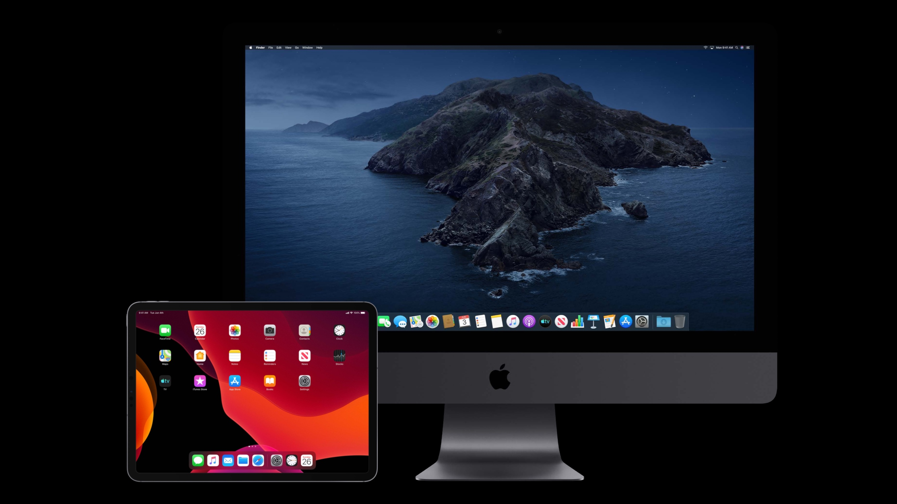

把 iPad 上的 app 带到 Mac 中去（下）
把 iPad 上的 app 带到 Mac 中去的上篇取材于 iOS HIG，从大的层面讲述了移植 app 到 Mac 中去的一些设计规范，取材于 WWDC session 的下篇将用更多的示例和图片主要围绕架构、工具栏、布局、排版、颜色、手势、触控栏、app 图标、情景化菜单、菜单栏菜单十个部分讲述更多移植的细节。

再说 iOS 和 macOS 深色模式
在 iOS 13 及之后的版本中，人们可以选择使用一种全局深色的外观，它就是深色模式（Dark Mode），这也是 iOS 13 设计最大的变化。在深色模式中，系统对于所有的界面、菜单、控件都使用了深色色盘，也使用了更多的虚化效果（vibrancy）以使得与更暗的背景内容相比，前景内容能够更加显眼明亮。深色模式支持所有的辅助功能。


设计绝佳的 Siri 捷径 - Siri 捷径从设计到构建（中）
上篇文章通过一步步深入 SiriKit 的细节，讲述了 SiriKit 可以让 app 发挥的领域以及引出了 Siri 捷径的多种类型和各种设计规范。这篇文章将用一个实际的例子一步步地从细节上去设计 app 的 Siri 捷径。
通常情况下，Siri 捷径（Siri Shortcuts）是在 iOS 上把你的 app 的功能在更多地方带到更多用户面前的一个好方法。


Copyright © 2018 Powered by MWeb, Theme used GitHub CSS.